Proyectándose
Siguiente
Notas del entrenador solo visibles aquí
Temporada 2026-2027 · Todo se trata de Jesús. 70 minutos en 4 secciones, con el tiempo de cada bloque según la agenda del manual. El público solo ve las diapositivas. Las notas del entrenador, los tiempos y el control de los videos se quedan en tu laptop.
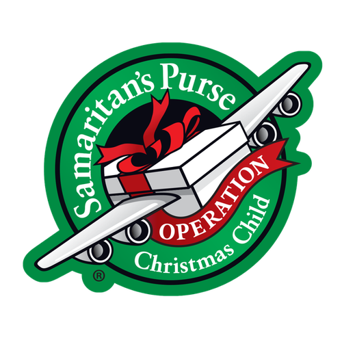
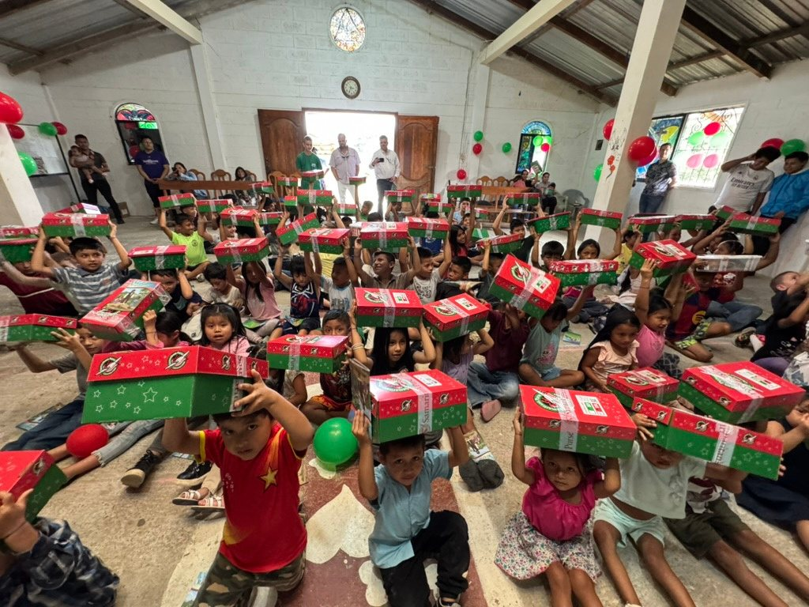
Ponte de pie si conociste a Jesús y lo seguiste…
13 Empezaron a llevarle niños a Jesús para que los tocara, pero los discípulos reprendían a quienes los llevaban. 14 Cuando Jesús se dio cuenta, se indignó y dijo: «Dejen que los niños vengan a mí; no se lo impidan, porque el reino de Dios es de quienes son como ellos. 15 Les aseguro que el que no reciba el reino de Dios como un niño, de ninguna manera entrará en él». 16 Y después de abrazarlos, los bendecía poniendo las manos sobre ellos.
Así que somos embajadores de Cristo, como si Dios los exhortara a ustedes por medio de nosotros: «En nombre de Cristo les rogamos que se reconcilien con Dios».
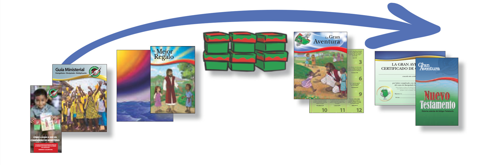
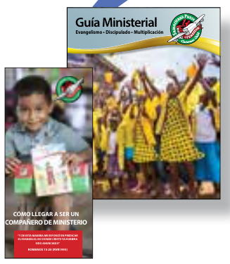
Hoy recibe una solicitud. El equipo de OCC revisa cada una y selecciona a los Compañeros de Ministerio.
Su Equipo Ministerial aprende a movilizar oración, organizar un evento seguro, presentar el Evangelio y discipular.
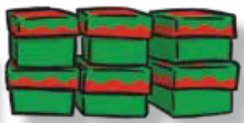
Movilizan Compañeros de Oración y voluntarios, y recogen las cajitas y los materiales.
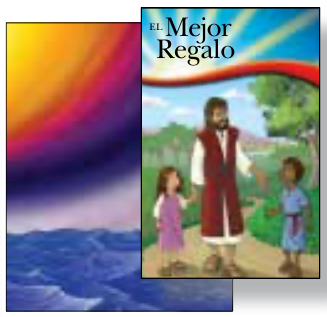
Los niños escuchan el Evangelio y reciben una cajita de regalo y El Mejor Regalo.
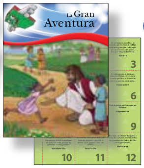
12 lecciones para conocer, crecer y compartir el Evangelio. Los graduados reciben un certificado y un Nuevo Testamento.
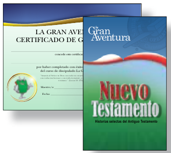
Después de la graduación, cada Compañero entrega un informe para celebrar lo que Dios hizo.
Voluntaria · si desea sembrar en este ministerio
Para guardar los materiales.
Para descargar el contenedor de cajas y literatura.
Para trasladar los materiales.
Para desarrollar la capacitación.
También útiles, agua, limpieza y tinta. Se lleva al almacén al recoger sus materiales.
Con las iglesias de .
Equipo Huaraz · 17 provincias de la sierra de Áncash
En , necesitan escuchar el Evangelio.
Grupo no alcanzado:
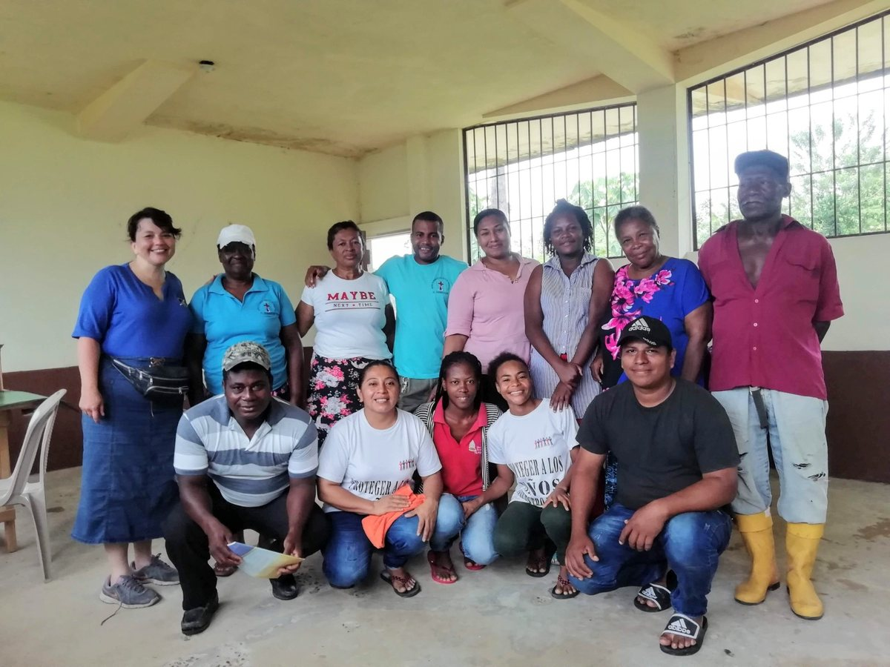
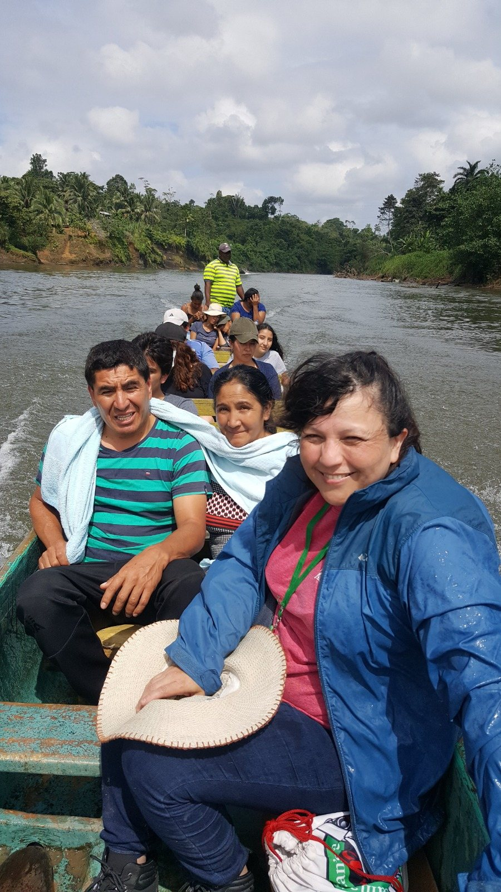
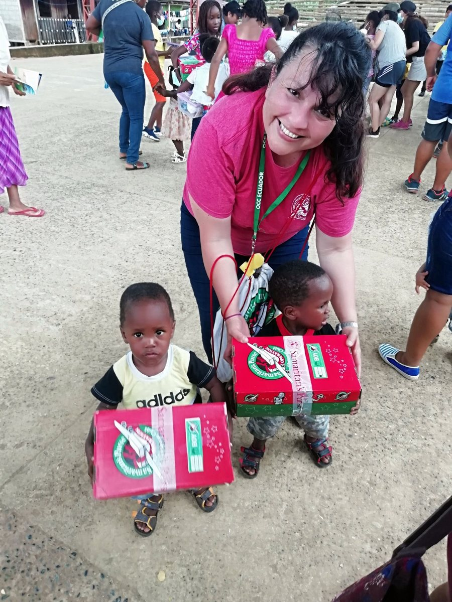
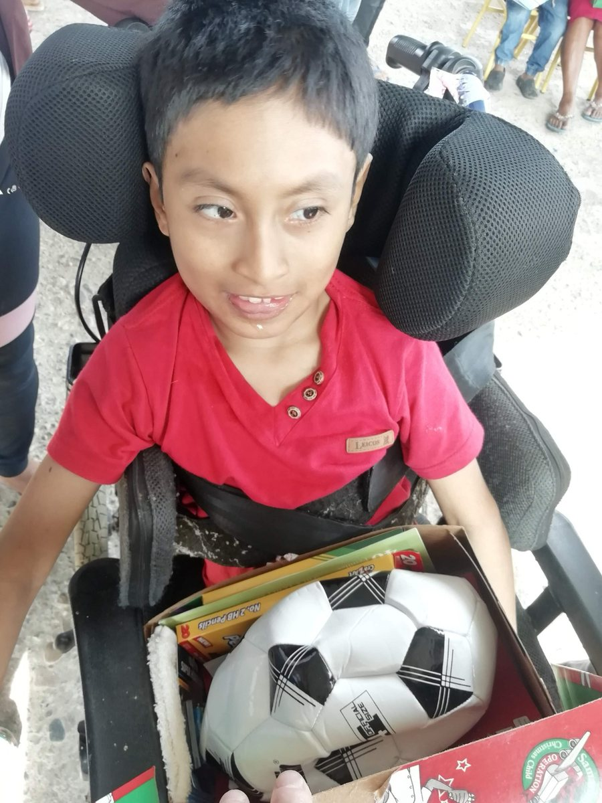
Porque «todo el que invoque el nombre del Señor será salvo». 14 Ahora bien, ¿cómo invocarán a aquel en quien no han creído? ¿Y cómo creerán en aquel de quien no han oído? ¿Y cómo oirán si no hay quien predique? 15 ¿Y cómo predicarán sin ser enviados? Así está escrito: «¡Qué hermosos son los pies de los que anuncian las buenas noticias!».
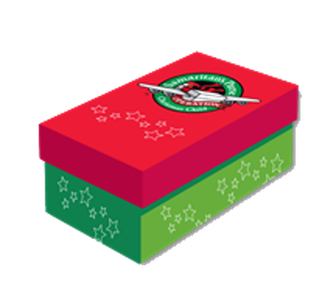
…si el ministerio de niños fuese una prioridad
¿Me está llamando Dios a participar con OCC?
¿A qué niños quiere que alcance?
Oremos en silencio
¿Le guía Dios a ser parte de OCC? ¿A qué niños?
Complete y entregue la solicitud al equipo de OCC.
Designe a un Líder del Equipo Ministerial de confianza.
Si es seleccionado, el Líder y los Maestros de LGA asisten a la capacitación.
Temporada 2026-2027
| Cajas | Maestros | Materiales de LGA | |
|---|---|---|---|
| • Pequeño | 50 | 2 | 50 |
| • Mediano | 100 | 3 | 80 |
| • Grande | 150 | 5 | 130 |
Temporada 2026-2027 · Todo se trata de Jesús
Firmada por el pastor y el Líder del Equipo.
Niños y adultos que orarán por el ministerio.
Valores fundamentales y protección de la niñez.
De Samaritan's Purse.
Hay comunidades con poco o ningún acceso al Evangelio. Hemos identificado a .
Buscamos un CM de GNA: un compromiso de varios años para hacer discípulos allí.
Su equipo recibe mentoría y apoyo en oración.
"… ¡La cuerda de tres hilos no se rompe fácilmente!"Eclesiastés 4:12 NVI
Más guerra espiritual: necesitamos oración por protección.
Tres reuniones de entrenamiento adicionales.
Cajitas, materiales, entrenamiento y oración. Sin fondos adicionales.
Cómo aplicar: complete la sección 5, "Comunidad no alcanzada", de su solicitud.